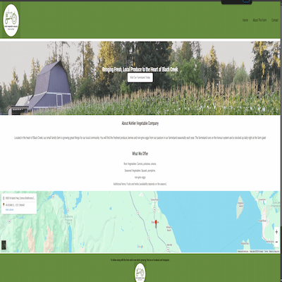
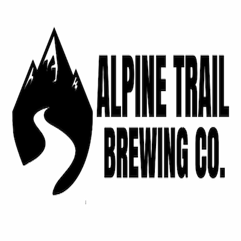
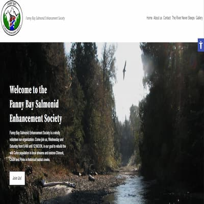

Jayden's Profile
I am a friendly, dependable, and detail-oriented designer who enjoys learning new skills and taking on creative challenges. My goal is to create visual work that is both effective and engaging while continuing to grow as a designer.
Back to homepageProjects
View selected projects below. More information can be found at Jaydenhargreaves.com.

Kehler Vegetable Company
Farm Market Website Redesign
This project focused on redesigning the Kehler Vegetable Company Farm Market website with a more modern, responsive, and user-friendly experience. The redesign explored accessibility, responsive design, interactive JavaScript features, seasonal produce information, image galleries, lazy loading, and improved navigation.
Website
Design and Branding
Brand Identity & Packaging Design
Alpine Trail Brewing Co. is a fictional craft brewery brand inspired by the outdoors and Pacific Northwest landscapes. The project focuses on creating a rugged yet modern identity that reflects adventure, nature, and exploration. The project includes logo design, typography, colour selection, beer branding, packaging concepts, and promotional materials.
Website
Fanny Bay Salmonid Enhancement Society Website
Website redesign and WordPress/web development work. Focused on organizing information, galleries, captions, and making the site easier to navigate.
Website
Game of Thrones Book Cover Series
Minimalist Book Cover Design
This project is a series of minimalist book covers inspired by the major houses of Game of Thrones. Each design uses a recognizable symbol to represent the Stark, Lannister, and Targaryen families. The project focused on typography, visual hierarchy, symbolism, consistency, and creating a cohesive series of designs.
WebsiteWork Experience
check out my work history and experience on LinkedIn at LinkedIn.
RKInnovations
Graphic Designer
July 2023 – Present
Contribute to graphic design work, including graphics and infographics. Apply creative and problem-solving skills to visual communication projects. Work with others while maintaining attention to detail and meeting project needs.
Ambassador — Muscular Dystrophy Canada
Ambassador
September 2020 – Present
Serve as an ambassador for Muscular Dystrophy Canada.
Key contributions and roles:
- Participated in the Walk & Roll Event through a co-op opportunity.
- Helped communicate information and support community-focused initiatives.
- Developed communication, teamwork, and public-facing skills
- Created graphics and infographics to help communicate information visually.
Fanny Bay Salmonid Enhancement Society
website development
July 2025 – August 2025
making the website for the Fanny Bay Salmonid Enhancement Society. The website is built using WordPress and includes a custom theme, and custom fields. The website is responsive and has a modern design.
contributions:
- helped design and develop the website.
- make it responsive and accessible.
- make it more modern and add gallery functionality.
Education
Communication Design Diploma
North Island College, 2027
a focus on communication design, graphic design, visual communication, and digital media.
Web Design Fundamentals Certificate
North Island College, 2023
Developed foundational skills in web design and digital development.
Social Media Marketing Certification
Hootsuite,2025